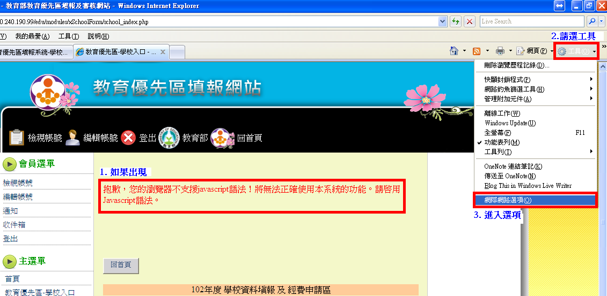
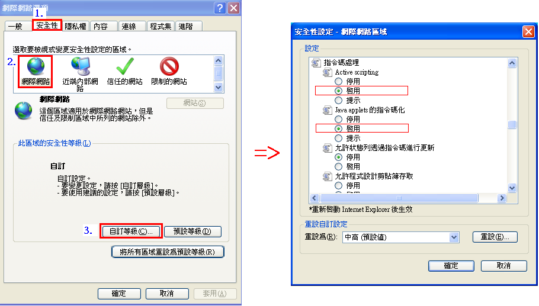

1.開啟ie瀏覽器後，看到畫面出現「抱歉，您的瀏覽器不支援JavaScript語法！將無法正確使用本系統的功能，請啟用JavaScript語法。」之警示語，請設定JavaScript。
2.於ie瀏覽器上方功能表中點選 [工具]→ [網際網路選項]開啟設定畫面。

3.於設定畫面中點選 [安全性] → [自訂層級]。
4.開啟[自訂層級]後，將右方捲軸往下捲動直到您看到標示 [指令碼處理] 的區域，在 [Active scripting] 、 [Java applets] 下，選取 [啟用]，然後按一下 [確定]。

5.設定完成後，關閉瀏覽器重新再進「教務優先區填報網站」即可。